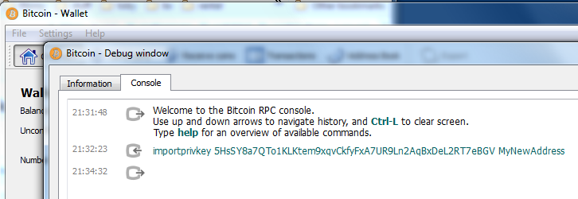
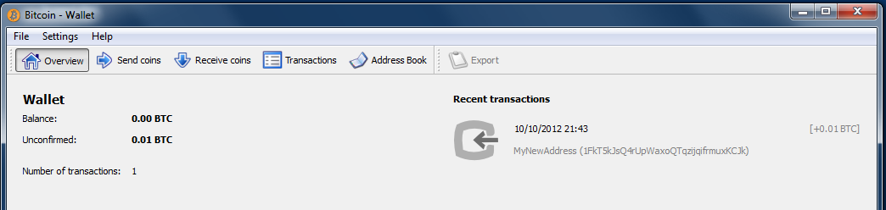

WARNING
Before reading this page, users should note that messing with ECDSA private keys is very dangerous and can result in losing bitcoins, even long after the import. It is recommended that outside of self-generated vanity addresses, users should never import (or export) private keys. (1.1) (1.2)
Backup Your Wallet
Although this process is well tested and used you should always take another backup of your wallet.dat file before starting.
Open Debug Window
Then go to menu: /Help/Debug Window
[[!img Error: Unable to detect image type from extension]]
and click on the tab - Console.
Unlock your wallet
If your wallet is encrypted (I hope it is!) you must unlock it. If not just skip this step.
To do this just type into the box at the bottom:
walletpassphrase "YourLongPassphrase" 600
You need the quotes if there is a space in your phrase else there is no need for them. The 600 means your wallet is unlocked for 10 minutes (600 seconds).
[[!img Error: Unable to detect image type from extension]]
Run Import Command in Debug Window
In the console at the very bottom is a text entry box. In here enter:
importprivkey yourPrivateKeyInWalletImportFormat "TheLabelThatIWant"
The quotes are only needed if you want a space in the label.

You now have to be patient. On a fast PC it takes 2 minutes to import, and during this time it looks like you application has hung. After waiting a few minutes you will see:

If you want import multiple private keys add false at the end like so:
importprivkey L1SLw5C14f8KBZCfUow3h5acEfC8ZLMiLo3fgoDWxHjCTuzyGPcd 'Label' false
Do not forget to add the blank label.
for all keys but the last, and then remove the false to allow the rescan. (5.1)
You are now done. But always best to check it worked.
Check Key Imported OK
Once Imported you can check that you have the address by closing the Debug window and going back to your address book.
You should see the address here:

And you can even send a transaction to check e.g.

Backup Wallet
Your backup of your wallet will not have this key in obviously. So before you do anything else backup the wallet.dat file as normal.
References
1.1: Bitcoin StackExchange - Why doc says importing private keys is so dangerous?
1.2: Bitcoin StackExchange - Why so many warnings about importing private keys?
5.1: https://www.reddit.com/r/Bitcoin/comments/2bh4tv/for_importprivkey_0921_just_got_a_whole_lot_more/ , Reddit /r/bitcoin thread